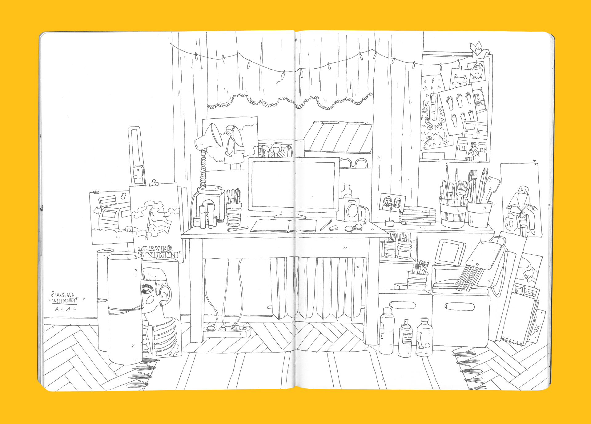
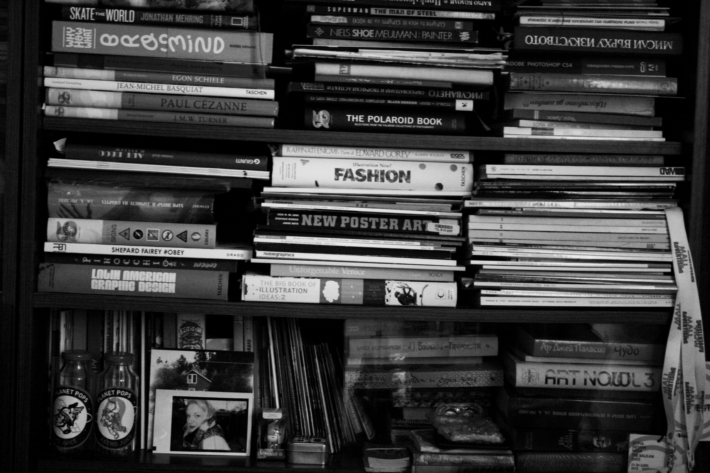
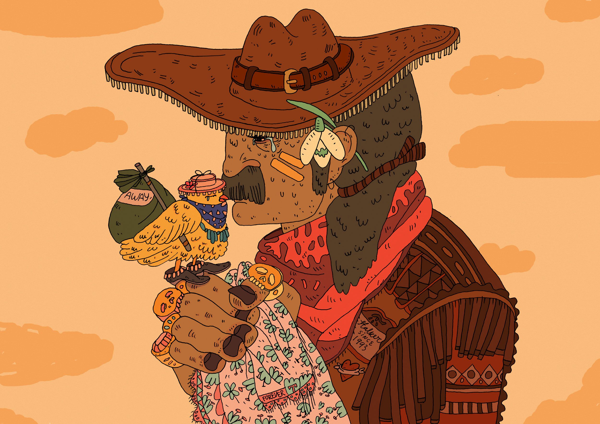
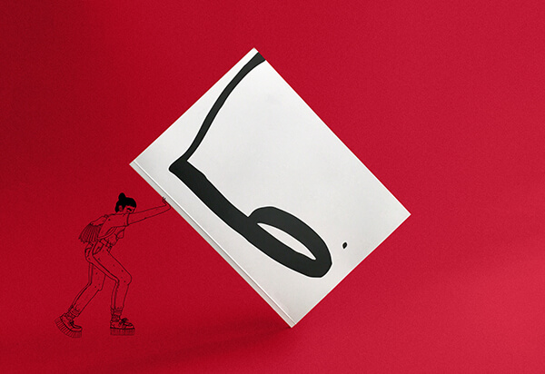

Stefan Vladimirov
Chief Creative at Swipes. Loves order and beauty. Always striving to achieve the balance between function
and aesthetics.
Illustrators
Borislava Karadzhova Mihaela Karadzhova
Short intro
B:B: I’m Borislava or Borislava Willnevermadeit. I’m 28 years old. I love riding my bike but I’m always seen pushing it instead.
M:My name is Mihaela or Stalkersince1993.i'm 24 years old . Born and raised in Bulgaria.Currently living in Sofia and enjoying daily my obsessions for illustration, music,fashion and skateboarding.
What do you do for a living?
M:I illustrate.
B:Graphic Designer by day, Freelance Illustrator by night.
When did you find your passion for Illustration?
M:I grew up in a very artistic atmosphere and i was surrounded every day by art and music thanks to my parents. My dad took care for the music as a musician, and my mom bought us the best illustrated books and animated movies on a film. And as people say the first 7 years are the most important , i guess that was the begining of it . Even though i started drawing more serious pretty late - during my school years.
B:When I was little I wanted to draw illustrations, but for a long time I couldn’t find my style. Even now I can’t call it style. But it’s something people knows me with so I guess i’m on the right way.
How long have you been doing Illustrations?
M:I I started drawing in the kindergarten as all young fellas , but the serious stuff came when i was in 5th grade - that was the time when i was put on the basics of drawing and painting . Illustration came a little bit later - when i got to study in National Academy of Arts in Sofia , Bulgaria for my BA degree in 2012.
B:When Since 2012.
Describe the beginning of your day
M:My morning routine is very simple. I wake up almost everyday at 8; i say to myself some positive words, while i'm still in bed as a start of the new day; i get out of the bed; warm water with lemon time; yoga time; shower time; breakfast; i check my e-mails; social media gossip time; and the song "She works hard for the money " by Donna Summer starts to play.
B:My alarm rings at 8:00. I’m snoozing it until 8:30-9:00. 10:00 I’m at work, till 18:00. Depends of the day after work I’m in English classes, yoga, dinner with friends or just going home And doing some drawings for the social media
How long have you been doing Illustrations?
What’s your workspace?
M: I'm currently working from home, so i made it look and feel like a little studio . There's my desk, papers, materials,sketchbook, books and magazines, the vinyls and lots of frames and art by friends and fav illustrators and a great view from my window.
B: 
What’s your source for inspiration?
M: I Oh, magazines and books and vinyls. You have no idea how much i adore them!
B:Flowers, beautiful women and Gucci.
What works are you most proud of?
M: The works for "Lost Generation" (Our first exhibition that we curated with my sister as "sisters-illustrators" ) and especially one particular illustration - It's called "The Last Goodbye" and was the hardest to draw, but i''m proud that i've found the strength to finish it. Link to the video of our exhibition : https://vimeo.com/243357091
The Last Goodbye
B:My ABC book. I did it for my MA degree in NAA. There are 30 illustrations for 30 letters in our alphabet. Every illustration is my point of view for the professions with the same letter. For example D is for Dentist, C is for Circus and so on. I were drawing them for one year.
ABC Book by Borislava check full showcase here
What are the tools you use in your day to day life?
M: Pencil, ink and tablet.
B: Macbook Pro, iPad Pro, Wacom Intuos Pro, pens and paper.
Do you follow any set of principles for your work?
M: I always start with a pencil, then transfer the drawing on a different paper with ink, scan , digital colouring and Voilà!
B: Think about the good things of life when you are doing it.
What’s your favourite movie?
M: I will use a cliche here - I can't choose one . So: Call me by your name; Hors de prix; Vicky, Christina,Barcelona; 20 ans d'écart; and the list goes on.
B: Sing Street
What's your favourite book?
M: I will have to go with this one - for the last few months my fav book stayed "Life" by Keith Richards. What can i say - i love biographical books , i love the blues, and i love the rock'n'roll.
B: Wonder
What advice would you give to people that start out with Graphic Design?
M: Draw everyday, draw everything and everyone; don't listen to people- in that case you may not want to listen to me either; do whatever you like to do; Your life is your life - follow your voice and your passion!
B: Draw every minute you can and believe in yourself. Write it somewhere and read it all the time again and again.
Have you ever thought on empowering your creative community in any way, shape or form?
M: Yes, i've been thinking about it ,lately. I was thinking about what brings illustrators together and what we can do to make the society of illustrators from all around the globe unified. Illustration Festival here in Bulgaria would be a super great start! Like a festival that includes not only lectures of illustrators from all around the world, but a drawing class with them , workshops, talking about the fun stuff in our jobs ... something that is super chill , not pressured by " talk serious and do serious stuff because life is serious". It's all about the fun!
B: Can’t say it better.
Borislava, Mihaela, I'm thankful for the lovely interview. Thank you for letting us get an insight into your creative minds.
Recommended reads